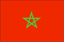
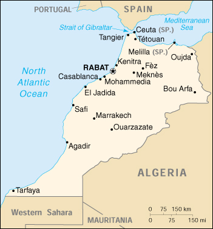

{kind=link}


| Morocco |  |
|
|  | |
| Introduction |
Background: Morocco's long struggle for independence from France ended in 1956. The internationalized city of Tangier was turned over to the new country that same year. Morocco virtually annexed Western Sahara during the late 1970s, but final resolution on the status of the territory remains unresolved. Gradual political reforms in the 1990s resulted in the establishment of a bicameral legislature in 1997.
| Geography |
Location: Northern Africa, bordering the North Atlantic Ocean and the Mediterranean Sea, between Algeria and Western Sahara
Geographic coordinates: 32 00 N, 5 00 W
Map references: Africa
Area:
total:
446,550 sq km
land:
446,300 sq km
water:
250 sq km
Area - comparative: slightly larger than California
Land boundaries:
total:
2,017.9 km
border countries:
Algeria 1,559 km, Western Sahara 443 km, Spain (Ceuta) 6.3 km, Spain (Melilla) 9.6 km
Coastline: 1,835 km
Maritime claims:
contiguous zone:
24 nm
continental shelf:
200-m depth or to the depth of exploitation
exclusive economic zone:
200 nm
territorial sea:
12 nm
Climate: Mediterranean, becoming more extreme in the interior
Terrain: northern coast and interior are mountainous with large areas of bordering plateaus, intermontane valleys, and rich coastal plains
Elevation extremes:
lowest point:
Sebkha Tah -55 m
highest point:
Jebel Toubkal 4,165 m
Natural resources: phosphates, iron ore, manganese, lead, zinc, fish, salt
Land use:
arable land:
21%
permanent crops:
1%
permanent pastures:
47%
forests and woodland:
20%
other:
11% (1993 est.)
Irrigated land: 12,580 sq km (1993 est.)
Natural hazards: northern mountains geologically unstable and subject to earthquakes; periodic droughts
Environment - current issues: land degradation/desertification (soil erosion resulting from farming of marginal areas, overgrazing, destruction of vegetation); water supplies contaminated by raw sewage; siltation of reservoirs; oil pollution of coastal waters
Environment - international agreements:
party to:
Biodiversity, Climate Change, Desertification, Endangered Species, Hazardous Wastes, Marine Dumping, Nuclear Test Ban, Ozone Layer Protection, Ship Pollution, Wetlands
signed, but not ratified:
Environmental Modification, Law of the Sea
Geography - note: strategic location along Strait of Gibraltar
| People |
Population: 30,122,350 (July 2000 est.)
Age structure:
0-14 years:
35% (male 5,372,393; female 5,175,114)
15-64 years:
60% (male 9,021,259; female 9,163,548)
65 years and over:
5% (male 632,698; female 757,338) (2000 est.)
Population growth rate: 1.74% (2000 est.)
Birth rate: 24.6 births/1,000 population (2000 est.)
Death rate: 6.02 deaths/1,000 population (2000 est.)
Net migration rate: -1.21 migrant(s)/1,000 population (2000 est.)
Sex ratio:
at birth:
1.05 male(s)/female
under 15 years:
1.04 male(s)/female
15-64 years:
0.98 male(s)/female
65 years and over:
0.84 male(s)/female
total population:
1 male(s)/female (2000 est.)
Infant mortality rate: 49.72 deaths/1,000 live births (2000 est.)
Life expectancy at birth:
total population:
69.13 years
male:
66.92 years
female:
71.44 years (2000 est.)
Total fertility rate: 3.13 children born/woman (2000 est.)
Nationality:
noun:
Moroccan(s)
adjective:
Moroccan
Ethnic groups: Arab-Berber 99.1%, other 0.7%, Jewish 0.2%
Religions: Muslim 98.7%, Christian 1.1%, Jewish 0.2%
Languages: Arabic (official), Berber dialects, French often the language of business, government, and diplomacy
Literacy:
definition:
age 15 and over can read and write
total population:
43.7%
male:
56.6%
female:
31% (1995 est.)
| Government |
Country name:
conventional long form:
Kingdom of Morocco
conventional short form:
Morocco
local long form:
Al Mamlakah al Maghribiyah
local short form:
Al Maghrib
Data code: MO
Government type: constitutional monarchy
Capital: Rabat
Administrative divisions:
37 provinces and 2 wilayas*; Agadir, Al Hoceima, Azilal, Beni Mellal, Ben Slimane, Boulemane, Casablanca*, Chaouen, El Jadida, El Kelaa des Srarhna, Er Rachidia, Essaouira, Fes, Figuig, Guelmim, Ifrane, Kenitra, Khemisset, Khenifra, Khouribga, Laayoune, Larache, Marrakech, Meknes, Nador, Ouarzazate, Oujda, Rabat-Sale*, Safi, Settat, Sidi Kacem, Tanger, Tan-Tan, Taounate, Taroudannt, Tata, Taza, Tetouan, Tiznit
note:
three additional provinces of Ad Dakhla (Oued Eddahab), Boujdour, and Es Smara as well as parts of Tan-Tan and Laayoune fall within Moroccan-claimed Western Sahara; decentralization/regionalization law passed by the legislature in March 1997 creating many new provinces/regions; specific details and scope of the reorganization not yet available
Independence: 2 March 1956 (from France)
National holiday: Throne Day or Sete de Throne 30 July (1999) (anniversary of King MOHAMED VI's accession to the throne)
Constitution: 10 March 1972, revised 4 September 1992, amended (to create bicameral legislature) September 1996
Legal system: based on Islamic law and French and Spanish civil law system; judicial review of legislative acts in Constitutional Chamber of Supreme Court
Suffrage: 21 years of age; universal
Executive branch:
chief of state:
King MOHAMED VI (since 23 July 1999)
head of government:
Prime Minister Abderrahmane YOUSSOUFI (since 14 March 1998)
cabinet:
Council of Ministers appointed by the monarch
elections:
none; the monarch is hereditary; prime minister appointed by the monarch following legislative elections
Legislative branch:
bicameral Parliament consists of an upper house or Chamber of Counselors (270 seats; members elected indirectly by local councils, professional organizations, and labor syndicates for nine-year terms; one-third of the members are renewed every three years) and a lower house or Chamber of Representatives (325 seats; members elected by popular vote for five-year terms)
elections:
Chamber of Counselors - last held 5 December 1997 (next to be held NA December 2000); Chamber of Representatives - last held 14 November 1997 (next to be held NA November 2002)
election results:
Chamber of Counselors - percent of vote by party - NA; seats by party - RNI 42, MDS 33, UC 28, MP 27, PND 21, IP 21, USFP 16, MNP 15, UT 13, FFD 12, CDT 11, UTM 8, PPS 7, PSD 4, PDI 4, UGTM 3, UNMT 2, other 3; Chamber of Representatives - percent of vote by party - NA; seats by party - USFP 57, UC 50, RNI 46, MP 40, MDS 32, IP 32, MNP 19, PND 10, MPCD 9, PPS 9, FFD 9, PSD 5, OADP 4, PA 2, PDI 1
note:
CDT, UTM, UGTM, UNMT are all labor unions listed under Political pressure groups and leaders; see explanation in the description of Parliament
Judicial branch: Supreme Court, judges are appointed on the recommendation of the Supreme Council of the Judiciary, presided over by the monarch
Political parties and leaders: Action Party or PA [Ahmed ABAKIL]; Constitutional Union or UC [Abdellatif SEMLALI]; Democratic Forces Front or FFD [Thami KHIARI]; Democratic Socialist Party or PSD [Issa al-OUARDIGHI]; Democratic Party for Independence or PDI [Thami el-OUAZZANI, Said BOUACHRINE]; Istiqlal Party or IP [Abbas EL-FASSI]; Labor Party or UT [leader NA]; National Democratic Party or PND [Mohamed Arsalane EL-JADIDI]; National Popular Movement or MNP [Mahjoubi AHARDANE]; National Rally of Independents or RNI [Ahmed OSMAN]; Organization of Democratic and Popular Action or OADP [Mohamed BENSAID]; Party of Progress and Socialism or PPS [Moulay Ismail al ALAOUI]; Popular Constitutional and Democratic Movement or MPCD [Dr. Abdelkarim al-KHATIB]; Popular Movement or MP [Mohamed LAENSER]; Social Democratic Movement or MDS [Mahmoud ARCHANE]; Socialist Union of Popular Forces or USFP [Abderrahmane YOUSSOUFI]
Political pressure groups and leaders: Association of Popular Trade Unions or ADP [leader NA]; Democratic Confederation of Labor or CDT [Noubir AMAOUI]; Democratic National Trade Union or USND [leader NA]; Democratic Trade Union or SD [leader NA]; General Union of Moroccan Workers or UGTM [Abderrazzak AFILAL]; Labor Union Commissions or CS [leader NA]; Moroccan National Workers Union or UNMT [leader NA]; Moroccan Union of Workers or UTM [Mahjoub BENSEDIQ]; Party of Shura and Istiqla [Abdelwaheb MAASH];
International organization participation: ABEDA, ACCT (associate), AfDB, AFESD, AL, AMF, AMU, CCC, EBRD, ECA, FAO, G-77, IAEA, IBRD, ICAO, ICC, ICFTU, ICRM, IDA, IDB, IFAD, IFC, IFRCS, IHO (pending member), ILO, IMF, IMO, Intelsat, Interpol, IOC, IOM, ISO, ITU, NAM, OAS (observer), OAU, OIC, OPCW, OSCE (partner), UN, UNCTAD, UNESCO, UNHCR, UNIDO, UPU, WHO, WIPO, WMO, WToO, WTrO
Diplomatic representation in the US:
chief of mission:
Ambassador (vacant)
chancery:
1601 21st Street NW, Washington, DC 20009
telephone:
[1] (202) 462-7979 through 7982
FAX:
[1] (202) 265-0161
consulate(s) general:
New York
Diplomatic representation from the US:
chief of mission:
Ambassador Edward M. GABRIEL
embassy:
2 Avenue de Marrakech, Rabat
mailing address:
PSC 74, Box 3, APO AE 09718
telephone:
[212] (7) 76 22 65
FAX:
[212] (7) 76 56 61
consulate(s) general:
Casablanca
Flag description: red with a green pentacle (five-pointed, linear star) known as Solomon's seal in the center of the flag; green is the traditional color of Islam
| Economy |
Economy - overview: Morocco faces the problems typical of developing countries - restraining government spending, reducing constraints on private activity and foreign trade, and achieving sustainable economic growth. Since the early 1980s the government has pursued an economic program toward these objectives with the support of the IMF, the World Bank, and the Paris Club of creditors. The dirham is now fully convertible for current account transactions; reforms of the financial sector have been implemented; and state enterprises are being privatized. Drought conditions depressed activity in the key agricultural sector, and contributed to an economic slowdown in 1999. Favorable rainfalls have led Morocco to predict a growth of 6% for 2000. Formidable long-term challenges include: servicing the external debt; preparing the economy for freer trade with the EU; and improving education and attracting foreign investment to improve living standards and job prospects for Morocco's youthful population.
GDP: purchasing power parity - $108 billion (1999 est.)
GDP - real growth rate: 0% (1999 est.)
GDP - per capita: purchasing power parity - $3,600 (1999 est.)
GDP - composition by sector:
agriculture:
16%
industry:
30%
services:
54% (1998 est.)
Population below poverty line: 13.1% (1990-91 est.)
Household income or consumption by percentage share:
lowest 10%:
2.8%
highest 10%:
30.5% (1990-91)
Inflation rate (consumer prices): 1.9% (1999 est.)
Labor force: 11 million (1997 est.)
Labor force - by occupation: agriculture 50%, services 35%, industry 15% (1999 est.)
Unemployment rate: 19% (1998 est.)
Budget:
revenues:
$9.1 billion
expenditures:
$10 billion, including capital expenditures of $1.7 billion (FY98/99 est.)
Industries: phosphate rock mining and processing, food processing, leather goods, textiles, construction, tourism
Industrial production growth rate: 2% (1998 est.)
Electricity - production: 13.16 billion kWh (1998)
Electricity - production by source:
fossil fuel:
83.59%
hydro:
16.41%
nuclear:
0%
other:
0% (1998)
Electricity - consumption: 12.363 billion kWh (1998)
Electricity - exports: 0 kWh (1998)
Electricity - imports: 124 million kWh (1998)
Agriculture - products: barley, wheat, citrus, wine, vegetables, olives; livestock
Exports: $7.1 billion (f.o.b., 1998)
Exports - commodities: phosphates and fertilizers, food and beverages, minerals (1998)
Exports - partners: France 27%, Spain 11%, India 7%, Japan 6%, Italy 5% (1998)
Imports: $9.5 billion (f.o.b., 1998)
Imports - commodities: semiprocessed goods, machinery and equipment, food and beverages, consumer goods, fuel (1998)
Imports - partners: France 22%, Spain 10%, US 7%, Germany 6%, Italy 6% (1998)
Debt - external: $19.1 billion (1999 est.)
Economic aid - recipient: $565.6 million (1995)
Currency: 1 Moroccan dirham (DH) = 100 centimes
Exchange rates: Moroccan dirhams (DH) per US$1 - 10.051 (January 2000), 9.804 (1999), 9.604 (1998), 9.527 (1997), 8.716 (1996), 8.540 (1995)
Fiscal year: July 1 - June 30
| Communications |
Telephones - main lines in use: 1.391 million (1998)
Telephones - mobile cellular: 116,645 (1998)
Telephone system:
domestic:
good system composed of open-wire lines, cables, and microwave radio relay links; Internet available but expensive; principal switching centers are Casablanca and Rabat; national network nearly 100% digital using fiber-optic links; improved rural service employs microwave radio relay
international:
7 submarine cables; satellite earth stations - 2 Intelsat (Atlantic Ocean) and 1 Arabsat; microwave radio relay to Gibraltar, Spain, and Western Sahara; coaxial cable and microwave radio relay to Algeria; participant in Medarabtel; fiber-optic cable link from Agadir to Algeria and Tunisia
Radio broadcast stations: AM 27, FM 25, shortwave 6 (1998)
Radios: 6.64 million (1997)
Television broadcast stations: 26 (plus 35 repeaters) (1997)
Televisions: 3.1 million (1997)
Internet Service Providers (ISPs): 27 (1999)
| Transportation |
Railways:
total:
1,907 km
standard gauge:
1,907 km 1.435-m gauge (1,003 km electrified; 540 km double track)
Highways:
total:
57,847 km
paved:
30,254 km (including 327 km of expressways)
unpaved:
27,593 km (1998 est.)
Pipelines: crude oil 362 km; petroleum products 491 km (abandoned); natural gas 241 km
Ports and harbors: Agadir, El Jadida, Casablanca, El Jorf Lasfar, Kenitra, Mohammedia, Nador, Rabat, Safi, Tangier; also Spanish-controlled Ceuta and Melilla
Merchant marine:
total:
40 ships (1,000 GRT or over) totaling 218,987 GRT/263,191 DWT
ships by type:
cargo 9, chemical tanker 6, container 3, passenger 1, petroleum tanker 3, refrigerated cargo 9, roll-on/roll-off 8, short-sea passenger 1 (1999 est.)
Airports: 70 (1999 est.)
Airports - with paved runways:
total:
26
over 3,047 m:
10
2,438 to 3,047 m:
5
1,524 to 2,437 m:
9
914 to 1,523 m:
1
under 914 m:
1 (1999 est.)
Airports - with unpaved runways:
total:
44
2,438 to 3,047 m:
1
1,524 to 2,437 m:
10
914 to 1,523 m:
22
under 914 m:
11 (1999 est.)
Heliports: 1 (1999 est.)
| Military |
Military branches: Royal Armed Forces (includes Army, Navy, Air Force), Gendarmerie, Auxiliary Forces
Military manpower - military age: 18 years of age
Military manpower - availability:
males age 15-49:
7,961,552 (2000 est.)
Military manpower - fit for military service:
males age 15-49:
5,026,210 (2000 est.)
Military manpower - reaching military age annually:
males:
335,264 (2000 est.)
Military expenditures - dollar figure: $1.361 billion (FY97/98)
Military expenditures - percent of GDP: 3.8% (FY97/98)
| Transnational Issues |
Disputes - international: claims and administers Western Sahara, but sovereignty is unresolved and the UN is attempting to hold a referendum on the issue; the UN-administered cease-fire has been in effect since September 1991; Spain controls five places of sovereignty (plazas de soberania) on and off the coast of Morocco - the coastal enclaves of Ceuta and Melilla which Morocco contests, as well as the islands of Penon de Alhucemas, Penon de Velez de la Gomera, and Islas Chafarinas
Illicit drugs: illicit producer of hashish; trafficking on the increase for both domestic and international drug markets; shipments of hashish mostly directed to Western Europe; transit point for cocaine from South America destined for Western Europe